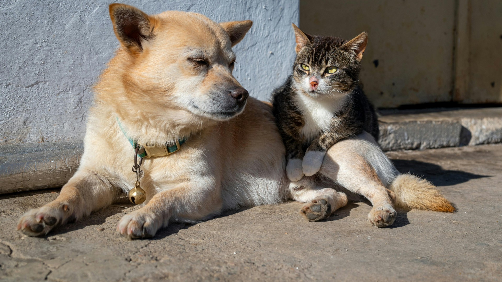

Antes da cirurgia
O pet deve passar por avaliação veterinária, estar saudável e seguir as orientações de jejum e preparação.
Muitas informações falsas impedem tutores de realizar o procedimento. Entender a ciência é o primeiro passo para cuidar melhor.
O pet deve passar por avaliação veterinária, estar saudável e seguir as orientações de jejum e preparação.
O repouso, o colar elizabetano ou roupa cirúrgica e a medicação correta ajudam na recuperação segura.
| O que dizem por aí (Mito) | A realidade |
|---|---|
| “O animal fica deprimido” | O pet mantém sua personalidade. Em muitos casos fica mais tranquilo, sem perder energia ou carinho. |
| “A fêmea precisa ter a primeira cria” | Não há necessidade. A castração planejada ajuda a evitar crias indesejadas e problemas reprodutivos. |
| “A cirurgia é sempre perigosa” | Com avaliação profissional, anestesia adequada e cuidados pós-operatórios, é um procedimento comum e controlado. |
| “Castrar é maldade” | Quando feita por veterinário, a castração é uma ação de cuidado, prevenção e responsabilidade social. |

O procedimento ajuda no controle populacional e pode contribuir para uma vida mais segura e equilibrada para o animal.
A castração deve ser realizada com avaliação veterinária, preparo adequado e cuidados no pós-operatório. O CastraPrev ajuda o tutor a entender cada etapa antes de solicitar o atendimento.
Ajuda a evitar crias indesejadas, cios frequentes, gravidez psicológica e algumas doenças do sistema reprodutor.
Pode reduzir fugas, brigas territoriais, marcação de urina e comportamentos ligados à reprodução.
Evita ninhadas sem lar e contribui para diminuir o abandono de cães e gatos nas ruas.